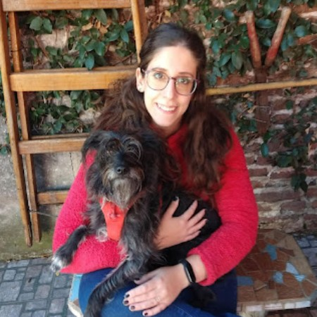
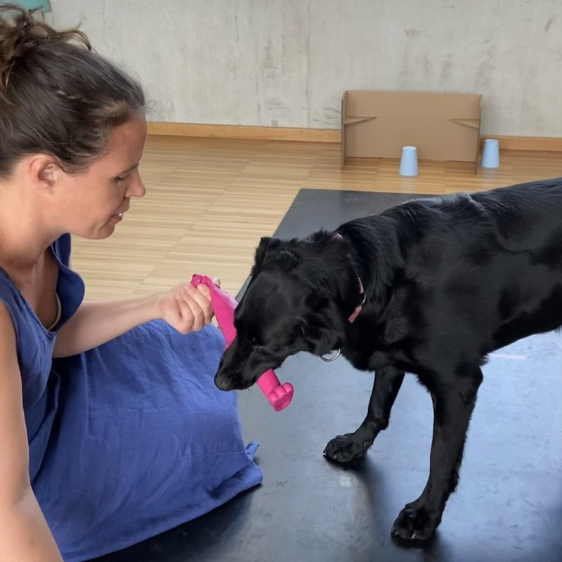

ManyDogs Leadership Team
Co-Directors
Camila Cavalli

Dr. Cavalli is a Postdoctoral Research Fellow in the Human Animal Interaction Lab, Animal Welfare Program, Faculty of Land and Food Systems, University of British Columbia (Vancouver, Canada). While many studies in the field of dog cognition compare family dogs with dogs that have a limited experience interacting with humans, such as shelter or free ranging dogs, her research focuses on therapy dogs. This allows her to explore what happens with the socio-cognitive abilities of dogs that experience the opposite situation of having an increase in their frequency and variety of interactions with humans.
Julia Espinosa

Dr. Espinosa co-founded the ManyDogs Project and was the project lead for ManyDogs 1. Dr. Espinosa is a National Science Foundation (NSF) Postdoctoral Fellow at Harvard University’s Department of Human Evolutionary Biology where she works with Dr. Erin Hecht’s Evolutionary Neuroscience Lab investigating the heritable and experience-dependent factors that influence the development of dog personality and behavior. After graduating with a BSc in Neuroscience from University of Michigan, she earned a MSc in Animal Biosciences from University of Guelph and a PhD in Cognitive Psychology at University of Toronto. Her work with dogs uses a multi-disciplinary approach to understand the evolution and current phenotypes of aggression and pro-sociality.
Jeffrey R. Stevens

Dr. Stevens is a Susan J. Rosowski Professor of Psychology at the University of Nebraska-Lincoln, where he leads the Canine Cognition and Human Interaction Lab studying dog behavior/cognition and canine-human interaction. He obtained his undergraduate degree at Baylor University and completed his Ph.D. at the University of Minnesota, followed by a postdoctoral fellowship at Harvard University and a research scientist position at the Max Planck Institute for Human Development. He has worked with 15 different species, ranging from fish to birds to primates. He’s now settled down to two: dogs and humans.
Assistant Directors
Emily Bray - Communications and Community Building

Dr. Bray is an Assistant Professor in The University of Arizona College of Veterinary Medicine and a Research Scientist at Canine Companions, the largest US non-profit providing service dogs to people with disabilities. She earned her undergraduate degree at Duke University, completing a senior thesis at the Duke Canine Cognition Center investigating context specificity of inhibitory control in pet dogs. She then went on to earn a Ph.D. from the Department of Psychology at the University of Pennsylvania. For her dissertation, she partnered with The Seeing Eye—the oldest guide dog school in the United States—to conduct a longitudinal study investigating the development of behavior and cognition in dogs. Most recently, she develops and implements cognitive tasks in hundreds of dogs from Canine Companions’ population.
Liz Hare - Data Management and Open Science
Dr. Hare leads Dog Genetics LLC where she consults on genetics and genomics research and breeding program planning in dogs. Dr. Hare earned her undergraduate degree at Bryn Mawr College before completing her Ph.D. at George Washington University. Dr. Hare then held research positions at Cornell University, the Animal Improvement Programs Laboratory for the United States Department of Agriculture, University of Texas Health Science Center San Antonio, and Texas Tech University. At Dog Genetics LLC, she has consulted for the Transportation Security Administration Canine Breeding and Development Center, Leader Dogs for the Blind, and Penn Vet Working Dog Center.
Valerie Kuhlmeier - Funding

Dr. Kuhlmeier is a Professor in the Department of Psychology, Queen’s University (Kingston, Ontario, Canada). Her research program explores cognition from a developmental and evolutionary perspective. She examines the origins of our cognitive capacities in a comparative manner, studying infants, young children, non-human primates, and dogs.
Madeline Pelgrim - Methods Development and Monitoring

Madeline is a graduate student in the Brown Dog Lab at Brown University’s Department of Cognitive, Linguistic, & Psychological Sciences. She completed her undergraduate degree at the University of Toronto studying Psychology and Biology. Madeline’s current research explores how dogs make decisions, using head-mounted eye trackers to categorize dogs’ daily environment.
Committee Members
Communications and Community Building Committee
This committee focuses on outreach to other academic groups (globally) as well as to non-academic professionals (e.g., working dogs). It also manages the project social media accounts.
Lucia Lazarowski

Dr. Lazarowski is a Research Assistant Professor at Auburn University College of Veterinary Medicine and Chief Scientist at Auburn University Canine Performance Sciences. Her research aims to improve detection dog selection, training, and performance by investigating factors related to early development, cognition, olfaction, and welfare.
Courtney Sexton

Dr. Sexton is a Postdoctoral Researcher in the Department of Population Health Sciences at the Virginia-Maryland College of Veterinary Medicine. She earned her PhD from the George Washington University Center for the Advanced Study of Human Paleobiology, where her dissertation explored co-evolution, interspecific communication, and social relationships between humans and dogs. As a postdoc at Virginia Tech, she is currently working on the Dog Aging Project, and is especially interested in One Health applications of canine science research. An accomplished writer, she is passionate about scientific outreach and journalism, and often ropes her hound, Sonder, into helping out.
Andrea Sommese

Dr. Sommese has worked mostly with canids, on topics spacing between ecology and behavior. His particular field of expertise is dog-human communication and dogs’ cognition. In the last 3 years, his research focused on language learning in dogs. The gifted dog project received considerable attention from the media, especially since it was the first live broadcast scientific event of its kind (‘the Genius Dog Challenge’). The outcome of this research has been featured in many news reports across TV, radio, newspapers, and other platforms.
Data Management and Open Science Committee
This committee is responsible for supporting ManyDogs projects in implementing open science practices and adhering to reproducibility standards, as well as developing database infrastructure/storage at the larger organization level.
Bryan Perez

Brian is a volunteer at the Hunter College Thinking Dog Center and lab technician at Rockefeller University. His interests are on human-nonhuman animal interactions and bonds of domestic and wild species. He has a preference in studying canine cognition and behavior such as language, communication, emotions, and perception. He graduated from undergrad at City University of New York, Hunter College studying Psychology: Animal Behavior and in the Animal Behavior & Conservation Masters Advanced Certificate program. He has been helping in the Thinking Dog Center in behavioral coding of stress behavior in dog shelters, handling dogs for the Impossible tasks and Bolgna Study. He participated in the draft writing intro and as an election teller for ManyDogs.
Funding Committee
This committee is responsible for applying for funding opportunities, connecting individual projects to funding opportunities, and networking with funding agencies and other big team science groups.
Daphna Buchsbaum

Dr. Buchsbaum is an Assistant Professor of Cognitive, Linguistic and Psychological Sciences at Brown University. She directs the Computational Cognitive Development Lab, and its sister lab the Brown Dog Lab. Dr. Buchsbaum completed her postdoctoral work as a Senior Research Fellow in the University of St. Andrews Psychology department. She completed her doctoral training the UC Berkeley Psychology department, as well as a master’s degree in the UC Berkeley Statistics department, focusing on applications of probability theory and statistical computing. Before that, she completed a master’s degree at the MIT Media Lab, working on social learning in interactive animated characters.
Methods Development and Monitoring Committee
This committee is responsible for supporting ManyDogs projects through protocol development and implementing best practices in canine science research methods.
Mia Hickey
Mia is an undergraduate student at the University of Arizona. She’s currently in her senior year at the University of Arizona. For her senior thesis, she’s working on ManyDogs 1 with the Arizona Canine Cognition Center. She helps to run the experiments, and she’s collecting data on the effect of canine engagement on experimental performance for her thesis question.
Hoi-Lam Jim

Dr. Jim is a Postdoctoral Researcher in the Institute for Advanced Study at Kyoto University. She is interested in animal behavior and cognition in a variety of cooperative, group-living species to further our understanding of social cognition in non-human animals. She obtained her PhD on eavesdropping in dogs, wolves, and elephants at the University of Veterinary Medicine Vienna, Austria.
Angie Johnston

Dr. Johnston is an Assistant Professor at Boston College (Boston, USA). In her research, she investigates the evolutionary origins of human teaching and learning. She investigate this question from a comparative perspective, examining which aspects of human learning are unique and which are shared across other species. In particular, she compares human learning to that of domesticated dogs, as dogs demonstrate striking similarities to humans in their capacity to learn from others.
Previous Leadership Team Members
Sarah-Elizabeth Byosiere, CAAB

Dr. Byosiere co-founded the ManyDogs Project, was a co-director from 2022-2023, and was a project coordinator for ManyDogs 1. Dr. Byosiere is the Director of Canine Research and Development at Guide Dogs for the Blind. Previously, she was the Director of the Thinking Dog Center at CUNY Hunter College where she focused on studying the behavior and cognition of domestic dogs, canids, and other companion animals. She began her career at the University of Michigan and has worked at various canine cognition and behavior research groups including the Duke Canine Cognition Center, the Clever Dog Lab, and the Wolf Science Center.
Ljerka Ostojić

Dr. Ostojić is Assistant Professor at the Faculty of Humanities and Social Sciences, University of Rijeka in Croatia, where she is currently Head of the Division for Cognitive Sciences. She hold an undergraduate and Masters degree in Psychology from the University of Vienna, Austria, and a PhD in Experimental Psychology from the University of Cambridge, UK. She has continued to work as a postdoctoral researcher in Cambridge on social cognition in humans, corvids, cephalopods, and dogs before moving to the University of Rijeka, where she is now continuing her research on social cognition, primarily in humans and dogs, as well as working on meta-science projects at the Centre for Mind and Behaviour, where she runs the Comparative Cognitive Science Lab.